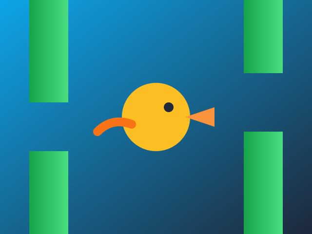
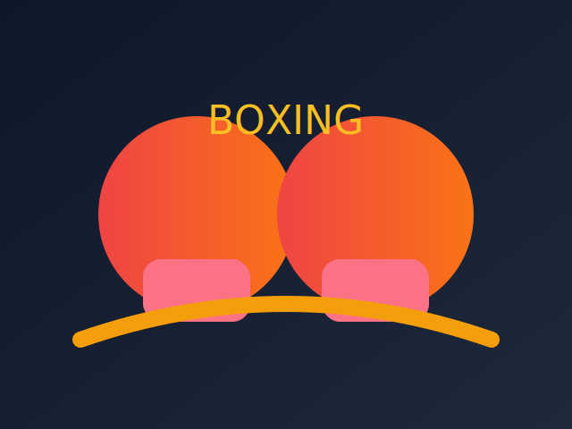

EmoTrace — Expression Tracker
Classify facial expressions (Happy/Sad/Angry/Surprised/Neutral) with calibration and a live confidence trace.

Fruit Catcher
Catch falling fruit with your finger using your webcam.
Flappy Bird AR
Flap your arms to keep the bird airborne through pipe gaps.
Boxing AR
Throw punches at the glowing targets with full-body tracking.
Potato Run
Jump your potato hero over veggie enemies in an infinite runner.

Global Leaderboards
See the top scores for Fruit Catcher, Flappy Bird AR, Boxing AR, and Potato Run.